MEEK：面向真实世界 OoO 超标量处理器的异构并行错误检测架构再思考
论文针对异构并行错误检测（用多个能效小核重放大核程序段以检错）此前仅有抽象仿真、缺乏真实 RTL 与 OS 支撑而难以落地的问题，构建了首个 full-RTL 全栈实现 MEEK。设计基于开源 SoC（BOOM 大核 + Rocket 小核）：大核侧以非侵入式 DEU 在 commit 阶段提取状态与访存数据，专用转发 fabric F2（DC-Buffer + 半双工组播 NoC）高带宽分发，小核侧以 LSL/MSU 支持重放检错，并配套定制 ISA、少量 Linux 内核修改与 checker 线程编程模型。结果显示 4 个小核下 SPEC/Parsec geomean 开销仅 1.4%/4.4%，平均检测延迟低于 1 µs、3 µs 可覆盖 99.9% 故障，远低于 ASIL-D 毫秒级 FTTI；TSMC 28nm 下总面积开销 25.8%。论文还量化了高层仿真与真实实现的面积估计偏差（每核 17.9%）与互连背压瓶颈（AXI 16.7% 对比 F2 <5%），凸显 full-RTL 实现的方法学价值。
异构并行错误检测此前仅通过抽象仿真研究，建立在理想化微架构假设之上且无 OS 支持：不清楚如何在不重度侵入成熟乱序超标量核心的前提下从核心各处收集海量数据、跨芯片路由并处理竞争，也缺乏小核管理的可配置框架，阻碍了该容错架构在实际商用核心中的部署。
采用硬件/软件协同设计，在开源 SoC（Rocket Chip：BOOM 大核 + Rocket 小核）上以最小侵入实现全栈方案。大核侧在 commit 阶段插入只读观测通道 DEU（含 Commit Detector 与旁路电路，直接从 PRF/CSR/LSQ 提取数据，不增加额外 buffer、不改动既有寄存器路径）；设计专用转发 fabric F2（每条 commit 路径挂 Dual-Channel Buffer，半双工组播 NoC 每周期传输两个包并用 FSM 保序），替代 AXI Interconnect 以消除背压；小核增加 Mode Switch Unit 与 Load-Store Log（双路 FIFO 实现，重放时代替 L1），并按大核瓶颈定制小核部件（如除法器 unrolling、FPU 流水线加长）以缩小性能差距。软件侧定义大/小核两类 MEEK-ISA 特权指令，内核修改仅限于调度器上下文切换函数的少量代码，并以 checker 线程编程模型完成段级重放与 RCP 处寄存器比对。
4 个 little core 下 SPECint2006 geomean 开销 1.4%、Parsec 4.4%；除 swaptions（22%，因 Rocket 除法器明显弱于 BOOM）外所有负载 slowdown 低于 5%
对比方案：软件机制 Nzdc geomean 开销 Parsec 60.2%、SPEC 94.2%；等面积硬件 EA-LockStep 为 Parsec 31.2%、SPEC 48.7%，分别是 MEEK 的 6.1 倍和 33.7 倍
检测延迟：平均低于 1 µs，最坏 2.7 µs（ferret）；超过 100,000 个故障采样点显示 3 µs 可覆盖 99.9% 以上硬件故障，比 ASIL-D 毫秒级 FTTI 要求低多个数量级
可扩展性：2 个小核 geomean slowdown 54.9%，4 个降至 4.4%，6 个进一步降至 0.3%（所有负载低于 1%），呈超线性下降
背压分解：全功能 AXI-Interconnect 引入 16.7% geomean 开销（128-bit 窄总线每周期仅一个包是系统瓶颈）；换成 256-bit、每周期多包的 F2 后，数据收集与转发总开销降至 5% 以下
小核优化：4 个按瓶颈定制的小核可匹敌 6 个默认小核的验证性能，归一化 performance/area 提升 15.2%（geomean）
TSMC 28nm 物理实现：BOOM 面积 2.811 mm²，每个 Rocket 0.092 mm²（不含 L1 D$）；大核数据收集与转发共 0.122 mm²（BOOM 的 4.3%，其中 DEU 0.071 mm²、F2 0.051 mm²）；MEEK 整体（4 Rocket + BOOM）共 0.726 mm²，即 25.8% 开销
Gap 分析：BOOM 面积仅为 Cortex-A57 的 72.1%；每核面积比先前 DSN'18 的综合估计多 17.9%，导致实际只能负担原设计 1/3 数量的小核
先前异构并行错误检测工作（如 DSN'18）停留在抽象仿真与理想化假设，MEEK 是首个从微架构、ISA 到 OS 与编程模型、面向真实 OoO 超标量处理器的 full-RTL 全栈实现。通过真实实现发现了高层仿真不可见的 bug、性能瓶颈与面积估计偏差：证明先前按 ROB 表项索引的专用 load 数据缓存并不必要（数据已缓存在 LSQ 中）；揭示 AXI 窄带宽互连是系统瓶颈并设计 F2 替代；发现小核性能差距不能靠简单堆核数解决而需按瓶颈定制。同时以硬件/软件协同设计将设计侵入降到最低（大核侧数据收集与转发仅占 BOOM 面积 4.3%），并给出抽象建模与真实综合之间的系统性 gap 分析。
相关度级别：high
命中能力域：2.1 IP 架构与微架构 | 2.2 RTL 设计与实现 | 2.6 仿真性能与加速器
理由：论文主题是 CPU 容错架构，与团队存储/互连 IP 产品线不直接重叠，但直接命中多个能力域的核心技术与工程场景：其一，可综合 RTL 全流程实现（Chisel）、Design Compiler 逻辑综合、IC Compiler 2 物理实现与 CDC 效率优化，对应 2.2 的核心技术；其二，FireSim + AMD UltraScale+ FPGA 全系统仿真（boot Linux 运行 SPEC/Parsec）对应 2.6 的 FPGA 原型/Emulation 场景；其三，F2 转发 fabric（DC-Buffer、半双工组播 NoC、每周期多包、FSM 保序、背压分解）与 AXI 互连瓶颈分析属于互连架构设计，与 2.1 相关。更重要的是，论文核心论点——高层仿真无法暴露真实 RTL 实现中的 bug、性能瓶颈与面积估计偏差——与团队'沉淀可复用方法学'的目标高度一致，其 Gap Analysis 方法可直接借鉴用于 IP 的 PPA 建模校准。
建议动作：深入精读并做内部分享
arXiv:2504.01347v1 [cs.AR] 2025年4月2日
MEEK：重新思考面向真实世界乱序（OoO）超标量处理器的异构并行错误检测架构
Zhe Jiang †、Minli Liao ¶、Sam Ainsworth ∥、Dean You †、Timothy Jones ¶
† 国家EDA技术创新中心，东南大学集成电路学院，中华人民共和国；¶ 英国剑桥大学；∥ 英国爱丁堡大学
摘要 - 异构并行错误检测是一种实现容错处理器的途径，它利用多个高能效核心重新执行原本运行在高性能核心上的软件。然而，其复杂的组件需要跨芯片地从核心的众多部分收集数据，这引发了如何在不进行重度设计侵入和大规模重新工程的情况下将其构建到商用核心中的问题。
我们构建了首个全寄存器传输级（RTL）设计MEEK，并将其实现于开源片上系统（SoC）之中，覆盖范围从微体系结构与指令集架构（ISA）到操作系统（OS）与编程模型。我们识别并解决了以往工作中被忽视的瓶颈与缺陷，并证明MEEK能够以可承受的开销提供微秒级的检测能力。通过在协同设计的软硬件各层之间对体系结构功能进行权衡，MEEK仅对成熟的乱序超标量核心做了少量修改，配备了简单的协调软件层，以及寥寥数行的操作系统代码。MEEK源代码仓库：https://github.com/SEU-ACAL/reproduce-MEEK-DAC-25
硬件故障（包括永久性故障与瞬态故障）会引发系统异常和执行错误，随着现代处理器晶体管数量的增加和工作电压的降低，这类问题日益普遍 [1], [2], [3], [4], [5], [6]。为缓解硬件故障导致的错误，现有多种保护机制，从错误码到容错架构不一而足。检测始终是关键：一旦检测到错误，系统便可转入安全状态，从而采取纠正措施（例如系统恢复或故障隔离）。正如工业界全球安全标准的强制要求，例如面向汽车领域的 ISO26262 [7] 和面向航空电子领域的 DO-178C [8]，硬件故障必须在升级为危害之前得到处理，即在故障容忍时间间隔（Fault Tolerance Time Interval, FTTI）内完成，该时间间隔通常以毫秒计 [9]。
软件机制（例如多线程 [4], [10] 和软件扫描器 [11], [12]）通常会导致显著的性能下降，或只能提供有限的故障覆盖率 [13]，因而无法满足对可靠性标准有严格要求的处理器（例如 ISO26262 中的 ASIL-D [7]）的需求。硬件机制通常采用一个专用核心来执行程序副本，从而能够在每个时钟周期对该核心的引脚进行比较（例如锁步 [14], [15], [16]）。通过在另一个独立且同步的核心上重放所有操作，并在信号层面执行运行时验证，可以实现完全覆盖与实时保证。尽管双核与三核锁步已在许多关乎生命安全的应用场景中成功应用于微控制器规模的处理器核心 [17], [18]，但已有研究表明，由于其难以承受的能耗、面积和散热开销，这类方案对乱序（Out-of-Order, OoO）超标量核心并不实用 [19], [20], [21]。
异构并行错误检测。作为一种颇具前景的替代方案，异构并行错误检测 [22], [23], [2] 利用强归纳（strong induction），借助寄存器检查点（Register Check Points, RCPs）将在乱序超标量高性能核心（大核心，big core）上运行的软件程序划分为多个离散的程序段，并在一组组更小、更节能的核心（小核心，little cores）上重新执行这些程序段以进行验证。
为了重放访存操作及其他不可重复的操作，相关指令（例如 load 和 store）的地址与数据会在大核心内部的提交阶段（commit stage）从程序流中提取出来，从而生成一个分区的、分布式的 load/store 操作日志。当某个程序段的日志被填满，或达到指令超时阈值时，便会触发一个新的 RCP，相应的小核心随即开始验证位于起始 RCP（Start RCPs, SRCPs）与结束 RCP（End RCPs, ERCPs）之间的程序段。通过重叠执行验证任务，众多小核心共同提供了足够的计算能力，得以跟上大核心的步伐，从而以较低的开销确保完全覆盖 [22]。
*本文已被 DAC'25 录用。
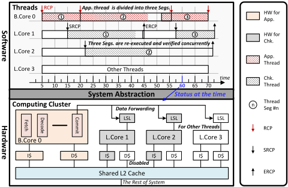
挑战。传统的锁步（lockstep）核心通常由相同的处理器核心配合多路选择器与比较器实现[24]，与之不同，异构错误检测依赖于大核心与众多小核心之间错综复杂的异步交互。这涉及持续地从大核心收集并分发加载、存储以及周期性的寄存器检查点（RCP），并灵活地管理小核心。这些数据需要从执行时刻起一直保存到提交（commit）为止，在按序传输之前保持完好，并且还要处理超标量提交。这也意味着所收集的数据必须被划分优先级，并以高带宽路由到相应的小核心，以防止背压（backpressure）导致大核心停顿。
有关该架构的现有工作[22]、[23]是通过抽象仿真开展研究的，其建模基于理想化的微架构假设，且没有操作系统（OS）参与，这为实际部署造成了障碍。例如，目前尚不清楚如何在不进行大规模微架构改动的前提下，从真实核心的不同位置收集如此海量的数据，如何在跨芯片路由时处理竞争，以及如何为小核心的管理提供一个可配置的框架。
贡献。我们通过软硬件协同设计（hardware/software codesign）对这一概念进行重构，并在各系统层之间对功能加以权衡，从而证明：只需极小的改动，就可以将异构错误检测构建到真实核心之中。这使得大核心上的应用线程可以利用 RCP 进行分段、重放，并由部署在任意小核心上的任意数量的校验线程加以验证，同时仍允许其他线程继续执行（图 1）。我们在一个开源片上系统（SoC）[25]上构建了全栈框架 Make Each Error Count（MEEK），证明该架构能够在成熟核心内以极小的设计侵入得以实现，并且只需在完整的 Linux 中进行寥寥数行的改动。
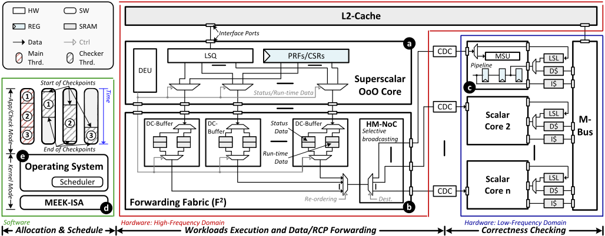
To implement MEEK at minimal complexity while achieving high performance, we had to make careful design-choice partitions between hardware and software (figure 2). On one hand, we had little choice but to implement load- and store-logging, for replay of execution on little cores, in hardware: using software-based instrumentation [26] would have meant infeasibly high overheads. On the other hand, since little cores perform page-table walks asynchronously with the big core, the OS had to be aware of them in some form, and so we let the OS fully control their scheduling, avoiding implementing complex decisions that were not on the performance critical path in hardware, and allowing little cores to execute standard processes as well. Rather than a fully transparent interface, and to avoid expensive full error correction in hardware [23], programs interact with the MEEK-ISA by being wrapped with coordinator functions inserted before main, which request checker resources from the OS, verify checking outputs, and call fault-handling code if needed.
To do so, we slightly modified the big core's microarchitecture to insert a read-only observation channel at the commit stage (Fig. 2 a ), collecting the big core's status data (i.e., architectural, control and status register files) at each RCP and the run-time data (addresses and data of memory and other non-repeatable operations) between RCPs. We built a dedicated data fabric (Fig. 2 b ), selectively broadcasting/routing the extracted data to the little core(s), minimizing the backpressure from the data communications. In little cores, the received data is buffered in a Load-Store Log (LSL), replacing the L1 cache during program replay, allowing the little core to reset its architectural state to a given SRCP, replay the exact instructions between the RCPs, and verify execution correctness at the ERCP, using the different types of data (Fig. 2 c ). Our ISA interface (Fig. 2 d and Tab. I) (re-)configures the little cores' checking characteristics, i.e., the operational mode (application or check mode).
| Instruction | Priv | Description |
|---|---|---|
| b.hook rs1, rs2 | 1 | Hook big core rs1 with little core rs2. |
| b.check rs1 | 1 | Enable/Disable checking capacity. |
| l.mode rs1, rs2 | 1 | Switch little core rs1's mode to rs2. |
| l.record rs1 | 0 | Record arch. registers to address rs1. |
| l.apply rs1 | 0 | Apply arch. registers from address rs1. |
| l.jal rs1 | 0 | Jump to rs1 (PC of main thread). |
| l.rslt rd | 0 | Return the check results. |
| Instruction | Priv | Description |
Detection approach. Error checking is parallelized using checker threads (Fig. 2 (b)): an application thread is segmented using RCPs, taken when the targeted LSL is full, an instruction timeout is reached, or the kernel mode is trapped. These segments are run in a second time by checker threads, assuming all previous segments are correct. After re-execution, the checker thread compares its architectural registers against the ones provided by the application thread at the same RCP. If the registers match, the segment is considered correct. If all segments pass check, the entire execution is deemed correct 1 .
即便采用了第 II 节所讨论的精简硬件特性集，MEEK 仍需要细致的微体系结构工程来实现高效、低开销的执行，尤其是在数据传输方面。我们识别并改善了此前工作 [22]、[23]、[27] 中由于缺乏寄存器传输级（RTL）实现而在其分析与高层仿真中被遗漏的许多关键瓶颈。我们还发现了冗余数据存储方面的低效之处：转发路径所需的许多信息在提交时刻之前本就已缓存在核心内部，这意味着并不需要专用结构；相反，我们可以从现有结构中转发数据。尽管存在这些瓶颈，我们证明了只需极小的改动就能基于成熟的异构片上系统（SoC）构建出 MEEK 的微体系结构，从而避免了繁重的工程投入。
1 然而，存储器操作无法在 ERCP 处得到验证。在重执行中，存储器操作的地址与数据在 LSL 中直接进行比较。对于控制与状态寄存器（CSRs），采用类似的设计方法来验证不可重复执行的指令。
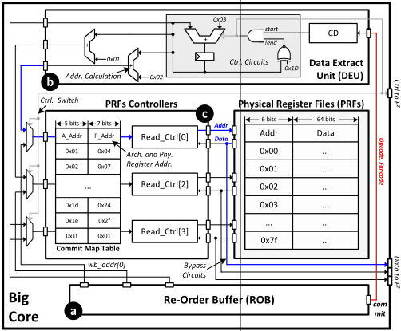
我们将 MEEK 构建到一个开源异构 SoC（Rocket Chip [25]）中，其中同时包含高性能核心与高能效核心（BOOM 和 Rocket）。我们借助 Rocket Chip 来展示我们的方法学对其他异构 SoC 的适用性，例如 ARM 的 big.LITTLE [28] 以及 Intel 的 P 系列与 E 系列核心 [29]。
Program replay requires the collection of both status data and runtime data from the big core. The data is temporarily stored within the core during the program executions but distributed across various locations. The status data is buffered in the Physical Register Files (PRFs) and Control and Status Registers (CSRs), while the run-time data is stored in the Load-Store Queue (LSQ) 2 and CSRs. All can be directly extracted but must occur in a narrow window, at commit time rather than execution time to reflect ordering, and before being overwritten by next instructions. In light of this, we develop a nonintrusive DEU to establish an observation channel (Fig. 3), containing a Commit Detector (CD), control circuits and bypass circuits, injected at the PRFs, CSRs, and LDQ. The CD monitors instruction commits from the ROB and selects the bypass circuits to extract data at RCPs or run-time data between RCPs. This enables timely data extraction without bringing extra buffers or altering existing register paths.
PRF example. Fig. 3 reveals the microarchitecture using the PRFs (used to collect RCPs) as an example, where the DEU interfaces the ROB, PRFs, and F 2 . At each instruction's commit, the opcode and function code are routed from the ROB (Fig. 3 a ) to the CD, allowing the CD to determine whether to extract data (Fig. 3 b ). If an RCP is reached, a signal is generated by the control circuits, preempting the PRF controller to read register files and forward them
2 By building MEEK, we noticed that Ainsworth et al. [22]'s policy, of storing a dedicated buffer of load data, indexed by Re-Order Buffer (ROB) entry, was unnecessary. All the need was already buffered in LSQ. Yet, light changes were needed to preserve redundancy and thus fault tolerance, as while we assume data is protected via parity in the cache [30], and via full duplication by the point of reaching the LSL, there is a small window in the LSQ where it is otherwise protected by neither. We copy the cache's parity bits into the LSQ, double-checking them once the data is forwarded.
Data from F 2
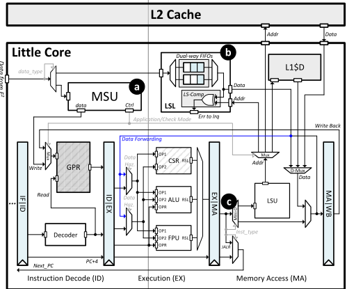
to the F 2 (Fig. 3 c ). The PRF controllers are multiplexed between the ROB and the DEU, where the DEU has priority access when required, enabling immediate data reading and preventing data overwriting 3 .
先前的仿真对数据前递采用了朴素的模型，忽略了竞争与关键路径 [22], [23], [31], [32]。我们在尝试实现这样一种机制时，发现了一个阻碍系统性能的绊脚石，即便部署了功能完备的 AXI 互连 [33], [34] 也无济于事（Sec. V-D）。这是由大核并行提交所产生的海量运行时数据与 RCP 的频繁到达相互拥塞所致，而 RCP 的到达往往以突发形式出现，尤其当大核在 RCP 边界处退休多条 load 或 store 指令时，需要在单个周期内完成大量数据传输，并要求很高的吞吐量。
我们采用双通道缓冲器（DC-Buffer）与半双工多播片上网络（HM-NoC）来设计 F²，用于存储和路由所提取的数据（Fig. 2 b）。每个提交路径都连接一个 DC-Buffer，并为状态数据和运行时数据分别添加独立的 FIFO。这确保了所有运行时数据都能在提交的同一周期内被存储，即使状态数据是同时生成的，从而避免数据需要在大核自身结构中存储比原始核设计更长的时间。HM-NoC 采用半双工（1-to-N）曼哈顿网格。为实现足够高的吞吐量，该 NoC 允许每周期传输两个数据包，同时保持顺序 4 。
新的 ISA 分为两大类（表 I），分别面向大核（b.x()）和小核（l.x()）。我们使用 b.hook() 来建立大核与小核之间的关联，随后通过 b.check() 借助开启/关闭 DEU 来启用/禁用检查能力。对于小核，l.mode() 用于设置其运行模式，而一对指令 l.record() 和 l.apply() 则从给定源记录并应用体系结构寄存器。为了将 PC 重定向到应用线程，我们设计了 l.jal()，它由原始跳转指令修改而来，仅对目标地址做了改动。通过将检查点结束（checkpoint-end）视为类似分支的操作，流水线能够处理由 PC 改变引发的控制冒险，而无需进一步的改动。最后，l.rslt() 用于指示是否检测到 RCP 不匹配。由于 b.hook() 和 b.check() 可能导致小核使用上的争用，而 l.mode() 可能因非预期的存储器访问而引发错误执行，因此它们均为特权指令，需通过操作系统系统调用（OS syscall）执行。
通过使用构造函数和析构函数 [36] 对应用程序线程的 main 函数进行增强，检查线程（checker thread）与应用程序线程一同被初始化（Al. 1: 第 14 行）。由于检查线程依赖 LSL 中的数据来重放存储器操作，且 LSL 采用 FIFO 设计，因此不希望发生对该日志的上下文切换。所以，在调度时，即使核心上可以调度多个线程，LSL 也会被保留给单个检查线程（Al. 1: 第 12 行）。一旦 LSL 被保留，在重执行完成之前，只会转发与相关联检查线程有关的数据。同样，绑定到特定应用程序线程的检查线程在重执行完成之前也无法被迁移。由于每个检查点的大小是有限的（最多 5000 条指令），且每个检查点结束后其所有权会交还给操作系统（OS）以便重新分配，因此这不会造成资源饥饿。
编程模型。我们基于新的指令集架构（ISA）开发检查线程，从而将编码工作量降至最低：首先，使用 l.record() 记录当前的体系结构寄存器状态（Al. 2: 第 15 行），使核心能够在验证之后返回。然后，创建一个忙等待循环（busy loop）以等待状态数据到达 LSL（Al. 2: 第 19 行）。在接收到状态数据后，调用 l.apply() 根据应用程序段修改核心的体系结构状态（Al. 2: 第 20 行），并调用 l.jalr() 将 PC 重定向到被复制的目标（Al. 2: 第 21 行）。最后，使用 l.rslt() 返回验证状态。如果检测到错误，则会触发中断，以通知 OS 采取纠正措施（Al. 2: 第 16 - 18 行）。
借助这一新的指令集架构（ISA），内核修改可以仅限于调度器内的上下文切换函数，从而实现检查能力的配置以及检查器线程的管理 [37], [38]。根据 big 核与 little 核的不同角色，应用程序线程和检查器线程的上下文切换以不同的方式加以修改。当从应用程序线程进入上下文切换时，会调用 b.check(DISABLE) 来停用检查功能（Al. 1: 第 3 行）；而在离开上下文切换时，则调用 b.check(ENABLE) 来重新启用该功能（Al. 1: 第 20 行）。此外，如果新释放的线程被调度执行，则使用 b.hook(core_index, next → checker_index[x]) 将其与 little 核相关联（Al. 1: 第 10 - 13 行）。对于应用程序线程的上下文切换，唯一需要的修改是使用 l.mode() 来切换 little 核的运行模式（Al. 1: 第 3 行和第 7 行），其余部分保持不变。
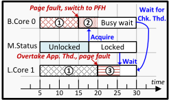
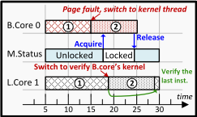
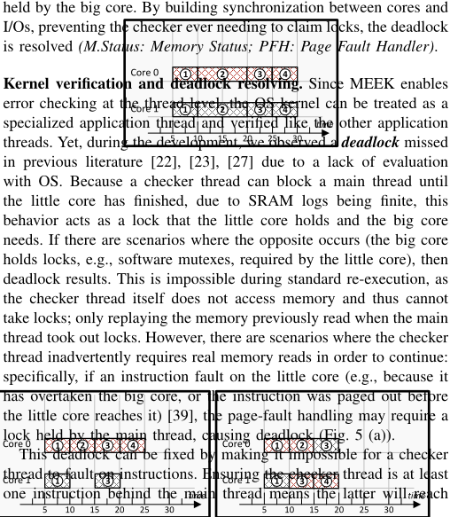
| 0 | 1 |
|---|---|
| Core Pipeline Branch Pred. | 4-Width, OoO superscalar SonicBoom, @3.2GHz 128-Entry ROB,96-entry IQ, 32-entry LDQ/STQ, 128 Int/FP Phy Registers, 2 Int ALUs, 1 FP/Mult/Div ALU, 2 MEM, 1 Jump Unit, 1 CSR Unit TAGE algorithm, 256-entry BTB, 32-entry RAS, 6 TAGE table with 2 - 64 bits history Memory Hierarchy |
| L1 ICache | 32 KB, 4-way, 8 MSHRs |
| L1 DCache | 32 KB, 4-way, 8 MSHRs |
| L2 Cache | 512 KB, 8-way, 12 MSHRs |
| LLC | 4 MB, 8-way, 8 MSHRs |
| Memory | 16 GB DDR3 @1066Mhz, max 32 requests Little Cores |
| Cores | 4 × In-order Rocket, 5-stage pipeline, @1.6GHz, 8-Unroll DIV, 3-stage FPU |
| LSL | 4 KB, 5000 instruction time-out |
| L1 Cache | 4 KB, 2-way for both I- and D-Cache |
| 0 | 1 |
故障优先。在 I/O 上进行同步会使得无法写出可能被未完成的检查器线程使用的页面（图 5 (b)）5。
我们在一个开源异构 SoC（Rocket Chip [25]）上构建了 MEEK，该 SoC 同时具备高性能（BOOM [40]）与高能效（Rocket [25]）两种核。作为 big 核的 BOOM 增加了 DEU 与 F²，而作为 little 核的 Rocket 则升级了 LSL 与 MSU 以支持重执行。我们使用 Chisel（v3.4）实现了该微架构，并使用 Vivado 工具链（v2021.2）对 RTL 进行了综合。生成的网表通过 FireSim [41] 部署在 AMD UltraScale+ FPGA 上，对表 II 中的配置进行了仿真。我们启动了 Linux 内核 v5.7，并使用 simmedium 数据集运行了完整的 SPECint 06 [42] 与 Parsec V3 [43]。
图 6 展示了在 MEEK 中运行 SPECint 和 Parsec 时大核所经历的减速，并与在 LLVM 中实现的基于软件的对应机制（Nzdc [44]）6 以及等效面积锁步（EA-LockStep）进行了比较。选择 Nzdc 进行比较是因为它是唯一可用的开源软件机制，而锁步则是使用最广泛的硬件机制。然而，在锁步中简单地复制核心将消耗大核两倍的面积，却只能获得与原始核心相同的性能，从而使比较失去意义。因此，我们通过对每个可配置的 BOOM 组件进行线性插值来缩减大核的配置，构建了一个比较器，使两个核心合计的面积开销与 MEEK 相匹配。在所有情况下，MEEK 均配置了四个小核。
使用四个小核足以执行 SPEC，开销为 1.4%，执行 Parsec 的开销为 4.4%（几何平均值）。除 swaptions 外，所有工作负载的观测减速均低于 5%。然而，swaptions 遭受了最高的 22% 减速，这是由于频繁的除法运算所致，因为 Rocket 核心的除法器性能显著低于 BOOM 核心的除法器。对于比较器而言，Nzdc 在 Parsec 上引入了 60.2% 的几何平均开销，在 SPEC 上为 94.2%，反映了与其软件实现相关的局限性。硬件对应方案 EA-LockStep 则在 Parsec 上产生了 31.2% 的几何平均开销，在 SPEC 上为 48.7%，分别约为 MEEK 的 6.1 倍和 33.7 倍，这证明了 MEEK 在性能-面积方面的优势。
为了考察检测延迟，我们向连接到大核的 F 2 所转发的数据中注入错误，例如数据和地址
5 更一般地说，如果内核操作位于复制域（sphere of replication）之内，则需要加以注意：倘若调度器被某个正在等待的主线程所持有的锁阻塞，进而阻塞了检查器，也可能发生类似的影响。
6 对于 Nzdc，在 gcc、omnetpp、xalancbmk 和 freqmine 上编译失败。
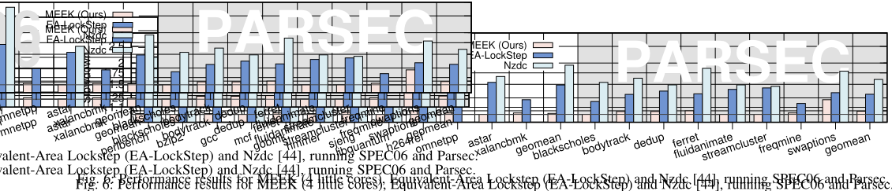
Z
ng up to
g up to
njection,
injection,
rhead is
erhead is
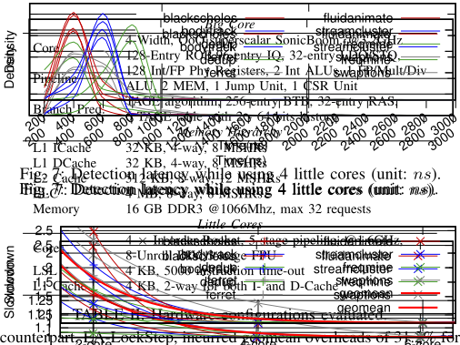
背压分解。图 9 展示了 MEEK 在运行 Parsec 时使用 4 个小核的开销分解，采用了图 8：使用不同数量小核时的性能下降。D. 微体系结构瓶颈分析 通过详细的实现，我们识别出了异构错误检测过程（第 III 节）中与数据收集、转发以及线程重执行相关的性能瓶颈。在此，我们对这些瓶颈进行深入分析，并检验我们所提出的微体系结构的有效性。图 10：小核的性能-面积分析。作业。鉴于我们的配置会增加小核的面积，我们采用归一化的性能/面积指标对它们进行评估以实现公平比较（图 10），结果显示出 15.2% 的提升（几何平均），证明了我们这一设计选择在性能-面积方面的效率。E. 硬件开销 图 10：小核的性能-面积分析。作业。鉴于我们的配置会增加小核的面积，我们采用归一化的性能/面积指标对它们进行评估以实现公平比较（图 10），结果显示出 15.2% 的提升（几何平均），证明了我们这一设计选择在性能-面积方面的效率。E. 硬件开销 图 10：小核的性能-面积分析。一个全功能的 AXI-Interconnect [45] 以及我们的 F 2 。如图 9 所示，AXI-Interconnect 引入了显著的 16.7% 开销（几何平均），这表明每周期仅能处理一个数据包的 128 位窄总线是整个系统的主要瓶颈，尤其当小核运行在较低的时钟频率时。这也促使开发专用的数据转发结构
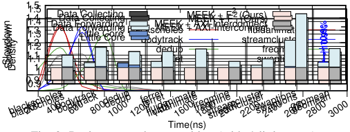
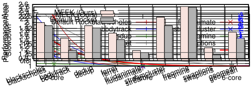
（[23] 中也指出了这一点）。最后，wrapper 逻辑此前被忽略了。（[23] 中也指出了这一点）。最后，wrapper 逻辑此前被忽略了。
尽管各个模块的面积估算差异看似不大，但其累积效应导致仿真开销与实际开销之间出现了显著的整体不匹配，这意味着我们 尽管各个模块的面积估算差异看似不大，但其累积效应导致仿真开销与实际开销之间出现了显著的整体不匹配，这意味着我们 Co Nu
C
Nu
Wrapper
Wrappe
TABLE I
ing L1 D
TABLE
ing L1
this wor
this work
L.
L. R
aviat
avia BOOM 的面积为 2.811 mm²，每个 Rocket 为 0.092 mm²，均不含 L1 D$（因为重执行并不需要它 [22], [23]）。BOOM 数据收集与转发部分的总面积为 0.122 mm²（占 BOOM 的 4.3%）：其中 DEU 占用 0.071 mm²，F² 消耗 0.051 mm²。总而言之，在 BOOM 之上构建带有四个 Rocket 的 MEEK 总共需要 0.726 mm²，即 25.8% 的开销。
我们观察到 MEEK 中实测的硬件开销与先前高层次仿真 [22] 中的估计之间存在差异。虽然这两项工作都声称约 25% 的额外面积足以让 Cortex-A57 级别的核心实现异构并行错误检测 7，但这一结论是基于不同的配置得出的：[22] 中为十二个 Rocket 核心，而本文中为四个频率翻倍的 Rocket。
经过进一步分析（表 III），我们识别出若干关键因素。首先，BOOM 的面积仅为 A57 的 72.1%，这很可能是由于 ISA 复杂度的差异所致。这意味着 [22] 中用 Rocket 来匹配 A57 的性能具有误导性，因为性能相近的小型 ARM 核心会比 RISC-V 核心更大。其次，我们的实现中每个核心所需的面积比 [22] 所用的综合结果多出 17.9%，而且其 L1 指令缓存的配置对于 SPEC 这类大型基准测试而言也不够用（[23] 中也指出了这一点）。最后，封装逻辑（wrapper logic）此前被忽略了。
| Big | Little | Big | Little | |||
|---|---|---|---|---|---|---|
| Core Number | Ours | BOOM 1 | Rocket 4 2 28 0.092 0.092 | DSN'18 [22] | Cortex-A57 1 3.2 20 2.050 3.905 x | Rocket 12 1 40 0.160 0.078 |
| Freq. (GHz) | Ours | DSN'18 [22] | ||||
| Tech. (nm) | Ours | 3.2 28 | DSN'18 [22] | |||
| Area (mm 2 ) | Ours | DSN'18 [22] | ||||
| @28nm | Ours | 2.811 | DSN'18 [22] | |||
| Wrapper (mm 2 | Ours | 2.811 | DSN'18 [22] | |||
| ) Overhead | Ours | 0.122 | 0.059 | DSN'18 [22] | x | |
| Ours | 25.8% | 25.8% | DSN'18 [22] | 24% | 24% |
| | | Big | Little | | Big | Little |
尽管各个模块的面积估计偏差看似不大，但其累积效应导致仿真开销与实际开销之间出现了显著的总体不匹配，这意味着我们的预算只够容纳 1/3 的小核心，因此不得不仔细优化每个核心的性能（第 V-D 节），而不是像原始论文的视角那样去扩展核心数量。
我们提出了 MEEK，一种异构并行错误检测的系统性实现，涵盖从微体系结构与指令集架构（ISA）到操作系统（OS）与编程模型的各个层面。尽管典型的体系结构研究通常采用抽象建模（例如 GEM5 [47]）进行快速原型开发，其速度远快于真实实现，但本工作展示了即便是建模良好的体系结构，在实际实现中也会面临诸多挑战，识别出高层仿真中不可见的缺陷、性能瓶颈与不准确的估计，同时也揭示了通过协同设计实现大幅简化的机会。我们相信，在这一层面的分析能够带来许多新的洞见，有助于将复杂的研究概念推向全面量产。
2 条证据未在原文中核对到